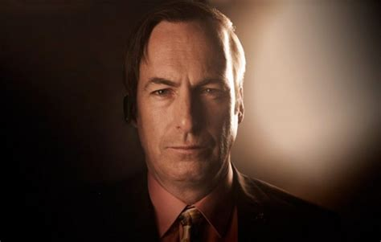

SoundsGOODmAN

In the legal landscape of Albuquerque, one name stands out among the serious suits and stern courtrooms – Saul Goodman, the flamboyant and colorful lawyer who has turned the art of lawyering into a comedic masterpiece. Known for his flashy advertisements and catchy taglines, Goodman has become a local legend, offering legal advice with a side of humor.
Goodman's office, located in a strip mall between a nail salon and a Cinnabon, is hard to miss with its neon sign and bold lettering proclaiming, "Better Call Saul!" But what sets Goodman apart is not just his catchy marketing strategies, but his ability to turn even the most dire legal situations into a comedy routine.
Picture this: a courtroom drama where Saul Goodman strides in wearing a technicolor suit that would make a peacock blush. He opens his argument with a joke that leaves the judge chuckling and the jury scratching their heads. It's not long before even the opposing counsel has to stifle a laugh, wondering if they've accidentally wandered into a comedy club instead of a courtroom.
But don't mistake Goodman's humor for incompetence. Behind the flashy facade and witty one-liners is a sharp legal mind that knows how to navigate the complexities of the law. Clients who initially seek him out for a laugh quickly discover that, beneath the surface, Saul Goodman is a shrewd and resourceful attorney
In a city where legal troubles are as common as the desert sun, Goodman has found a niche by offering legal services with a side of entertainment. His commercials, featuring jingles that stick in your head like gum on hot pavement, have become a local phenomenon. It's hard to resist the urge to dial his number just to experience the quirky charm of a Saul Goodman consultation.
Goodman's unorthodox approach to law has not only gained him a loyal clientele but also made him a cultural icon. People recognize him on the streets, and his catchphrases have become part of the city's vernacular. In a place where legal troubles can be as unpredictable as a desert dust storm, having Saul Goodman on speed dial has become a rite of passage.
So, whether you're facing a minor legal hiccup or a full-blown courtroom drama, one thing is for sure – in the world of Saul Goodman, legal troubles are just another punchline in the grand comedy of life.
| Name |
Age |
Occupation |
| John Doe |
30 |
Engineer |
| Jane Smith |
25 |
Teacher |
| Bob Johnson |
40 |
Artist |